课程笔记
1 操作系统引论
1.1 以printf程序为例
可执行文件运行过程
首先知道，计算机的操作系统的启动程序是写死在硬件上的，每次计算机上电时，都将自动加载启动程序，之后的每一个程序，每一个应用，都是不断的 fork 出来的新进程。那么我们的可执行文件，以linux 系统为例，也是由shell 进程 fork 出一个新进程，在新进程中调用exec函数装载我们的可执行文件并执行。
主要经过的函数有：
execve()函数对进程栈进行初始化，即压栈环境变量值，并压栈传入的参数值，最后压栈可执行文件名。初始化完成后调用 sys_execve()
sys_execve()函数进行一些参数的检查与复制，而后调用 do_execve()
do_execve()函数在当前路径与环境变量的路径中寻找给定的可执行文件名，找到文件后读取该文件的前128字节。读取这128个字节的目的是为了判断文件的格式，每个文件的开头几个字节都是魔数，可以用来判断文件类型。读取了前128字节的文件头部后，将调用 search_binary_handle()
search_binary_handle()函数将去搜索和匹配合适的可执行文件装载处理程序。Linux 中所有被支持的可执行文件格式都有相应的装载处理程序。以Linux 中的ELF 文件为例，接下来将会调用elf 文件的处理程序：load_elf_binary()
load_elf_binary()函数执行以下三个步骤:
- 创建虚拟地址空间：实际上指的是建立从虚拟地址空间到物理内存的映射函数所需要的相应的数据结构。（即创建一个空的页表）
- 读取可执行文件的文件头，建立可执行文件到虚拟地址空间之间的映射关系
- 将CPU指令寄存器设置为可执行文件入口（虚拟空间中的一个地址）
load_elf_binary()函数执行完毕，事实上装载函数执行完毕后，可执行文件真正的指令和数据都没有被装入内存中，只是建立了可执行文件与虚拟内存之间的映射关系，以及分配了一个空的页表，用来存储虚拟内存与物理内存之间的映射关系。
返回execve()，新的程序开始启动，发现程序入口对应的页面并没有加载（因为初始时是空页面），则此时引发一个缺页错误，操作系统根据可执行文件和虚拟内存之间的映射关系，在磁盘上找到缺的页，并申请物理内存，将其加载到物理内存中，并在页表中填入该虚拟内存页与物理内存页之间的映射关系。之后程序正常运行，直至结束后回到shell 父进程中，结束回到 shell。
操作系统工作
1.2 操作系统基本概念
操作系统定义：
计算机体系结构：
操作系统作用：
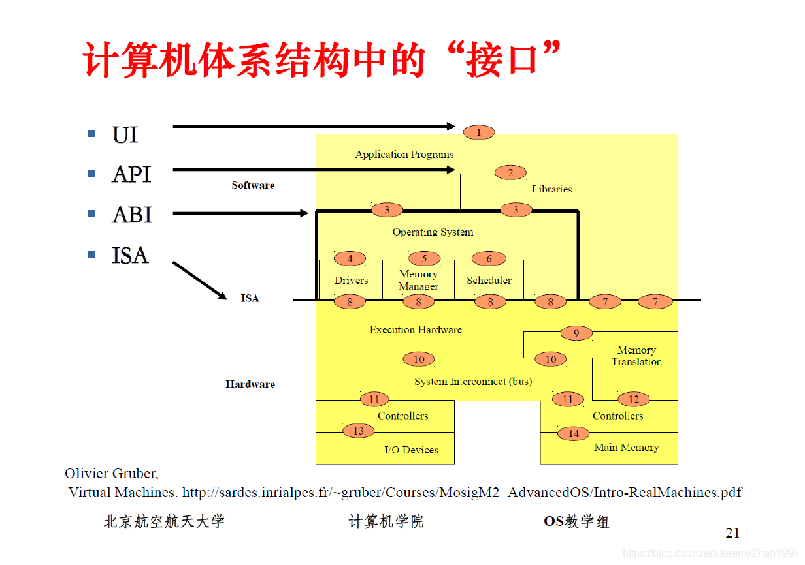
思考：计算机系统中不同层次接口的作用。
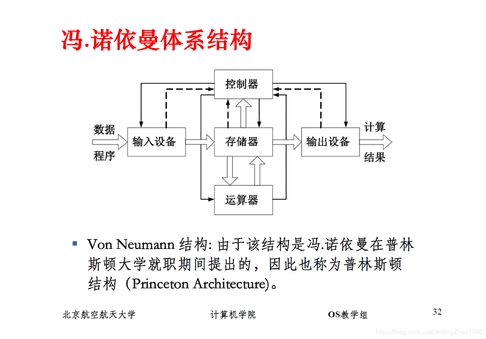
1.3 操作系统发展简史
- 史前阶段
- 批处理技术（联机批处理、脱机批处理、多道批处理）
联机：
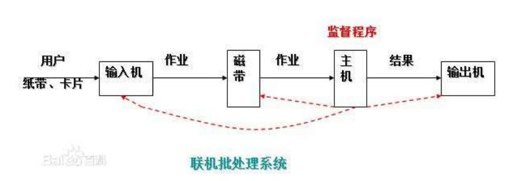
脱机批处理：
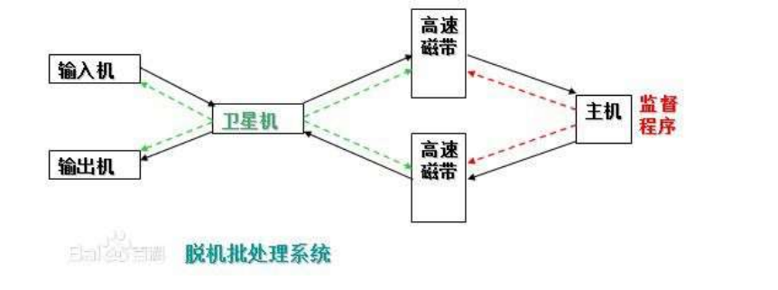
卫星机
多道批处理：
允许多个程序同时进入内存并运行。
- 分时技术：把处理机的运行时间分成很短的时间片，按时间片轮流把处理机分配给各联机作业使用
- 现代OS
- 网络化OS/分布式OS/实时系统
1.4 计算机硬件简介
- Intel/Sparc
- CPU流水线结构
- 计算机存储结构
I/O设备
- 设备控制器
- 设备驱动程序
总线
1.5 操作系统基本实现机制
异常基本概念
陷阱和中断
异常分类
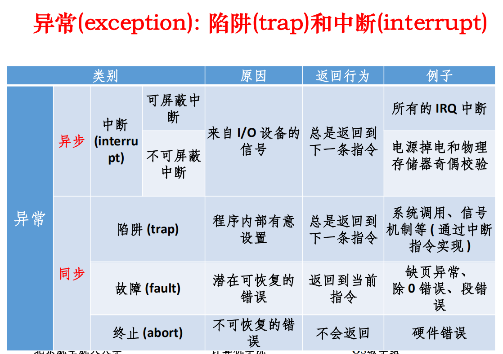
系统调用
系统调用也视作同步异常，或trap
1.6 操作系统基本类型
- 批处理系统
- 分时系统
- 实时系统：及时性和可靠性
- 混合型
1.7 操作系统特征和功能
操作系统解决基本问题
解决冲突、协调活动、保证数据一致性、实现数据的存取控制
操作系统特征
并发、共享、虚拟（SPOOLing等）、异步性
操作系统功能
- 处理机管理：进程（线程）控制、进程（线程）同步、进程通信、进程（线程）调度
- 存储器管理：内存分配、内存保护、地址映射、内存扩充
- 设备管理：缓冲管理、设备分配、设备处理、虚拟设备功能
- 文件管理：文件存储空间管理、目录管理、文件读写管理、文件保护、向用户提供接口
- 作业控制：作业调度、作业控制
1.8 操作系统结构
模块接口方法
有序分层法
虚拟机
微内核结构
内核中只包括中断处理、进程通信、基本调度等。
1.9 机制与策略分离
灵活、可扩展
1.10 常见操作系统介绍
2 启动（bootloader）
2.1 Bootloader基础
Booter来源
2.2 计算机启动过程（MIPS）
MIPS基本地址空间
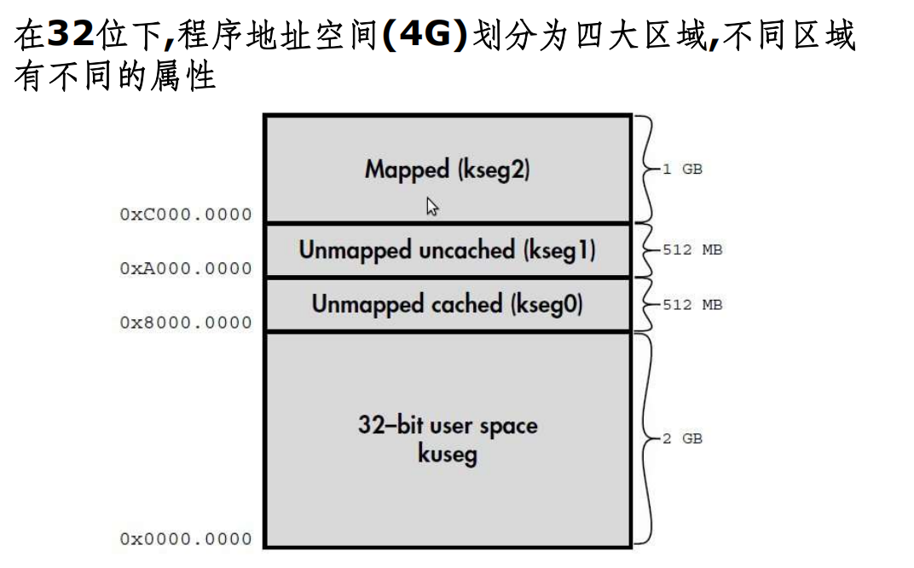
- kuseg：须经MMU转换
- kseg0：最高位清零即可转换为物理地址，经过cache，内核所在位置
- kseg1：将高三位清零即可得到物理地址，非cache存取。
- kseg2：需要经过MMU转换，有时会被分为kseg2和kseg3，意在强调低半部分（kseg2）可供运行在管理态的程序使用
在启动时，TLB、cache机制都没有建立，只能使用kseg1，入口地址为0xBFC00000。
MIPS启动过程
启动过程1（汇编语言程序）
启动过程2（C语言程序）
2.3 MIPS下Linux系统引导过程
第一阶段：Head.s
第二阶段：start_kernel
2.4 计算机启动过程（x86）
加载BIOS（Basic Input / Output System）
BIOS设置程序是被固化到电脑主板上地ROM芯片中的一组程序，其主要功能是为电脑提供最底层的、最直接的硬件设置和控制。BIOS通常与硬件系统集成在一起（在计算机主板的ROM或EEPROM中），所以也被称为固件
知识补充：BIOS。
读取MBR
Master Boot Record
知识补充：磁盘结构与MBR。
2.5 x86下Linux系统引导过程
运行Boot Loader
知识补充1：Linux加载器——GRUB、LILO。
知识补充2：Kernel image内核映像文件。
加载内核
用户层init设定运行等级
init进程执行rc.sysinit
启动内核模块
执行不同运行级别的脚本程序
执行/etc/rc.d/rc.local
执行/bin/login程序，进入登录状态
思考题：为什么操作系统的启动慢？回答这个问题，可以聚焦以下几个小问题。
①给出对OS启动过程分析，指出最耗时的启动过程；②现有的优化措施有哪些；③思考优化建议。
3-1 程序的链接与装载
3-1.1 gcc简介
3-1.2 ELF（可执行文件格式）
ELF结构
ELF文件头定义
反汇编ELF文件
3-1.3 程序链接过程
3-1.4 程序的装载和运行
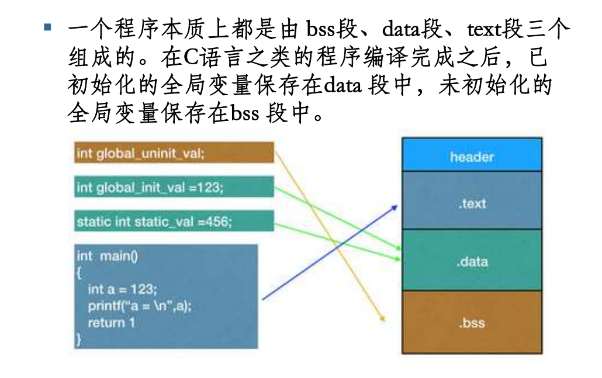
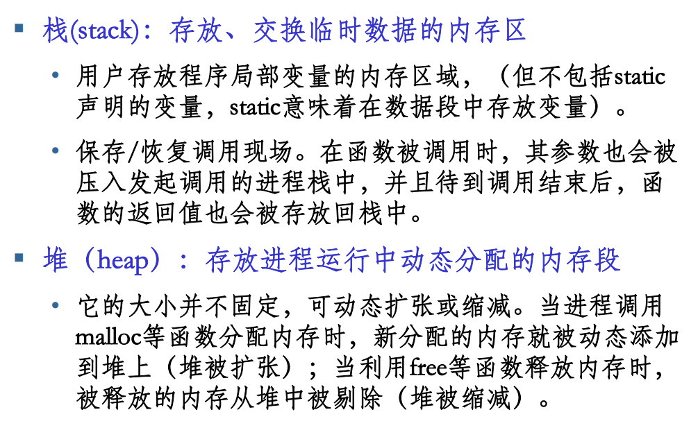
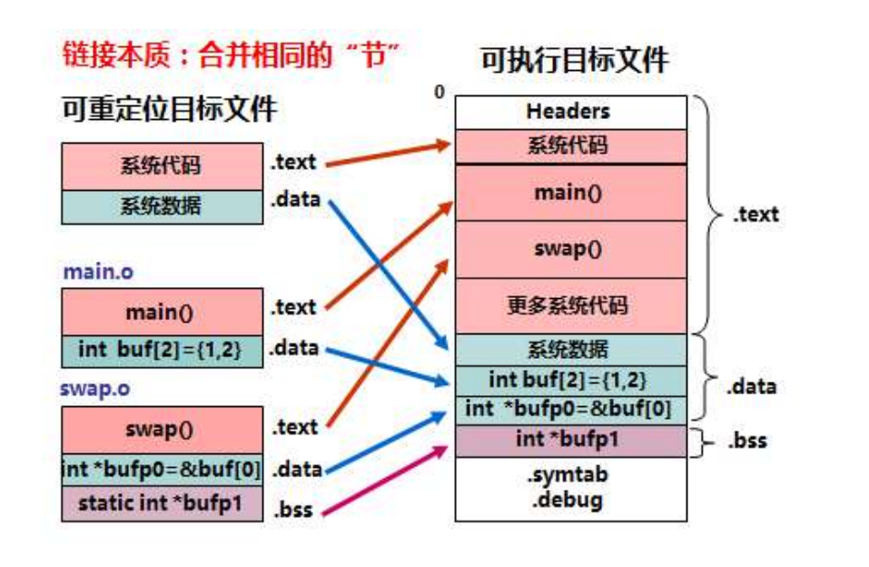
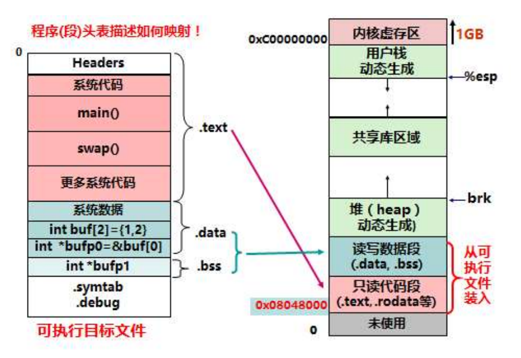
3-2 存储管理基础
3-2.1 存储器管理目标
- 研究对象：以内存为中心的存储资源
- 管理前提：帕金森定律——无论存储空间多大，程序均能将其耗尽
- 从用户角度：容量大、速度快、独立拥有（安全）
- 从资源管理角度：为多用户提供服务，兼顾效率、利用率、能耗
3-2.2 存储器硬件发展
存储器类别
| 类别 | 小类 | 特性 |
|---|---|---|
| RAM | SRAM（读写速度快、生产成本高、用于小容量Cache）、DRAM（读写速度慢，集成度高成本低，用于大容量主存储器）、SDRAM | 易失性 |
| ROM | PROM、EPROM、EERPOM | 非易失性 |
| Flash memory | NOR、NAND | 非易失性、外存 |
| Disk | - | 非易失性、外存 |
| Tape | - | 非易失性、外存 |
从上到下：容量增大、速度变慢
从古到今：向高速、大容量、小体积的方向发展
存储性能的提升速度落后于CPU
存储组织
- 组织最佳状态：各层次存储器都处于均衡点繁忙状态。
- 存储层次结构：寄存器（register）—快速缓存（cache）—主存—外存
3-2.3 存储管理的功能
存储管理基本需求
- 使用者角度：存在用户程序地址空间，保证独立和安全；
- 计算机平台提供者角度：存在服务程序（操作系统）地址空间，同时为多用户提供系统服务。
基本概念
地址空间：一个进程能够用于访问内存的地址集合。
逻辑地址/虚拟地址：程序使用的地址。
物理地址：物理内存中数据存储的地址
存储管理基石
地址独立：程序发出地址和物理地址无关；
地址保护：一个用户程序不能访问另一个用户程序的地址空间。
存储管理功能
- 存储分配和回收
- 地址变换
- 存储共享和保护
- 存储器扩充
3-2.4 程序内存分配实例
单道程序
存储组织：只有用户程序和操作程序两个部分，所占空间和地址固定。
地址变换方法：静态地址翻译，在程序运行前计算所有物理地址。
地址独立（用户无需知道物理内存地址）、地址保护（没有其他用户程序）
优点：运行过程无需翻译地址、速度快
缺点：大内存程序无法加载；小程序空间浪费；I/O时间长时计算资源浪费
多道程序
存储组织：分区式分配，把内存分为若干分区，被应用程序和操作系统占用。
固定式分区。
- 结构特点：分为若干固定大小的连续分区；
- 数据结构：利用分区表记录分区大小和使用情况；
- 优点：易于实现，开销小；
- 缺点：内碎片的浪费，分区总数固定限制并发程序的数目；
- 分配方式：单一队列分配方式（所有程序排在共同队列中）、多队列分配方式（程序按内存大小排在相应队列中）
可变式分区。
结构特点：分区大小可变。
优点：没有内碎片；缺点：有外碎片（程序之间的过小不可使用的部分）。
闲置空间管理：跟踪内存使用。（位图表示法、链表表示法）
位图表示法：每个分配单元设置二进制数位，0表示闲置、1表示占用
链表表示法：将状态连续的分配单元合并，用四个单元格表示——第一格P(Process)/H(Hole)表示是否占用，第二格表示起始地址，第三格表示内存空间大小，第四格指向下一存储块。
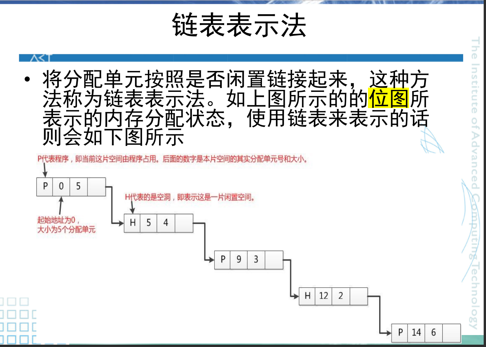
分区分配的操作：
规定：当剩余空闲分区小于某个下限时，不再进一步分割
计算请求分区大小u.size和空闲分区大小m.size
当m.size<u.size时，向下检索下一分区
当m.size-u.size<=size时，整个分区分配给请求者
否则将分区分割出请求块大小分配出去，剩余部分留在空闲区中。
内存回收：将回收分区与可能存在的前后空闲分区合并为空闲分区。
- **分配算法。**
- 基于顺序搜索的分配算法
首次适应算法：每个作业均从第一个分区开始查找；
下次适应算法：每个作业均从上一次查找结束的地方（指上一个分配出去分区的下一个分区）开始查找；
最佳适应算法：对所有分区排序遍历，每个作业均选择最接近于作业要求的分区；
最坏适应算法：每个作业均选择最大的空闲区。
- 基于索引搜索的分配算法：适合较大的分区较多的系统。
- 快速适应算法
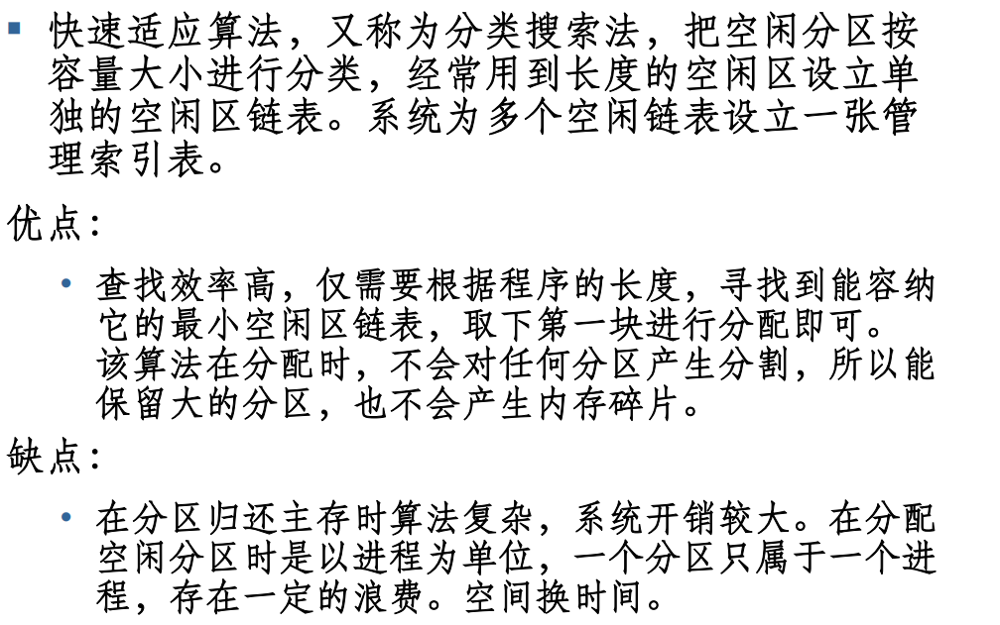
- 伙伴系统：介于固定分区和可变分区之间的动态分区技术
- 可重定位分区分配
系统中碎片的概念：
①内部碎片： 指分配给作业的存储空间中未被利用的部分，如固定分区中的碎片。内部碎片无法被整理，但作业完成后会释放。他们其实已经被分配出去，只是没有被利用。
②外部碎片：
动态分区管理会产生外部碎片，这指的是分区与分区之间的小的空闲分区，是造成内存系统性能下降的主要原因，外部碎片可以被整理后清除。（方法：紧凑技术）
紧凑技术：
时机：当找不到足够大的空闲分区，但是总空闲分区容量满足作业要求时；
方式：通过移动作业，把多个分散的小分区拼接成一个大分区的方法；
目标：消除外部碎片，使得本来分散的多个小空闲分区连成一个大的空闲区。
实现支撑：动态重定位。
可重定位分区分配算法。
- 多重分区分配：将一道作业分成若干片段，分别分配内存的不同空间的分配方法。
分区的存储保护
存储保护的目的：
- 界限寄存器方法
- 上下界寄存器
- 基址、限长寄存器
- 存储保护键方法
3-2.5 覆盖与交换
覆盖与交换技术都是内存扩充技术，用以解决在较小的内存空间运行大作业时内存不足的情况
分区管理的问题
- 一个程序在运行过程中需要更多空间时，如何预留一定空间？
- 大作业如何在小内存中运行？
覆盖技术（Overlay）
- 概念：将程序分为一系列功能相对独立的程序段，让执行时不要求同时装入内存的程序段组成一组（覆盖段），不同组间共享主存的一个区域。
- 应用目的：主要解决大作业和小内存的矛盾。
- 要求：作业各模块之间有明确的调用结构，对用户不透明，增加了用户的负担
交换技术（Swapping）
- 概念：广义的说，所谓交换就是把暂时不用的某个（或某些）程序及其数据的部分或全部从主存移到辅存中去，以便腾出必要的存储空间；接着把指定程序或数据从辅存读到相应的主存中，并将控制转给它，让其在系统上运行。
- 优缺点：换出消耗大量的CPU时间，合理的做法是在换出时仅将执行时修改过的部分复制到外存
- 交换内存选择原则：选择哪个进程换出内存？等待I/O的进程
- 交换时机的选择
覆盖技术和交换技术区别
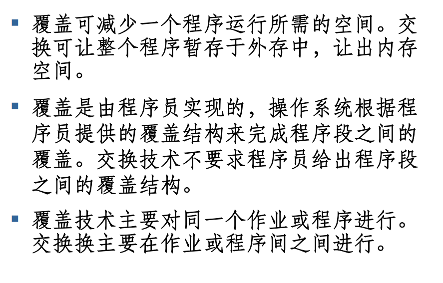
3-3 页式内存管理
3-3.0 程序、进程和作业
- 区别：程序是静态的概念；进程是程序在处理机上 一次执行的过程，是动态的概念。
- 联系：
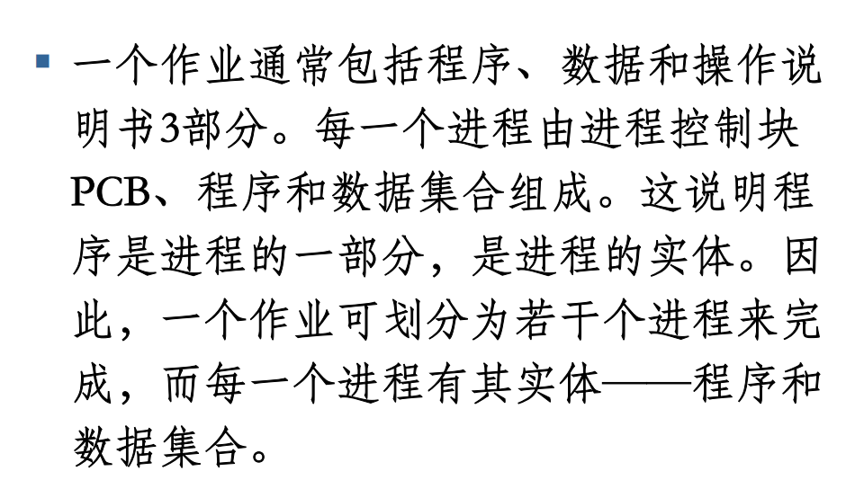
3-3.1 页式内存基本原理
分页存储管理的思想
将逻辑地址连续的程序分散存放于若干不连续的内存区域中，并保持程序正确运行。
纯分页系统（Pure Paging System）
- 概念：在分页存储管理方式中，如果不具备页面对换功能，不支持虚拟存储器功能，这种存储管理方式称为纯分页或基本分页存储管理方式
- 内存调度方法：调度一个作业时，必须把它的所有页一次性的装到主存的页框内，若页框数不足，则必须等待。
- 优缺点：程序必须全部装入内存
3-3.2 页式内存基本概念
页、存储块和页表
页：
存储块/页框：
- 页表：
纯分页系统
在分页存储管理方式中，如果不具备页面对换功能，不支持虚拟存储器功能，这种存储管理方式称为纯分页或基本分页存储管理方式。
页面大小的选择
小页面
- 好处：减少页内碎片和总的内存碎片，有利于提高内存利用率
- 缺点：页面数增多，使页表长度增加，占用内存；页面换进换出速度降低
大页面
- 好处：页面数减少，页表长度减小，占用内存变小；页面换进换出速度增高
- 缺点：增加页内碎片，不利于提高内存利用率
地址结构
- 逻辑地址结构
- 物理地址结构
多级页表
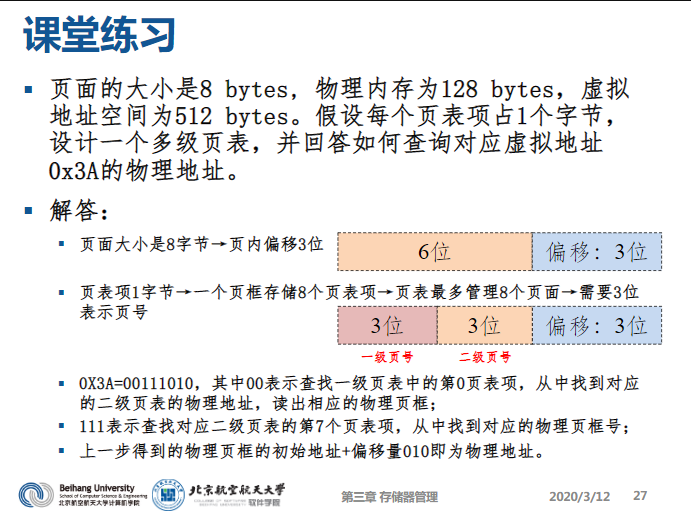
页表机制带来了额外的时间开销，造成内存访问效率下降。
二级页表的大小和页面的大小相同。
快表（TLB）
- 有效内存访问时间（一级页表）EAT
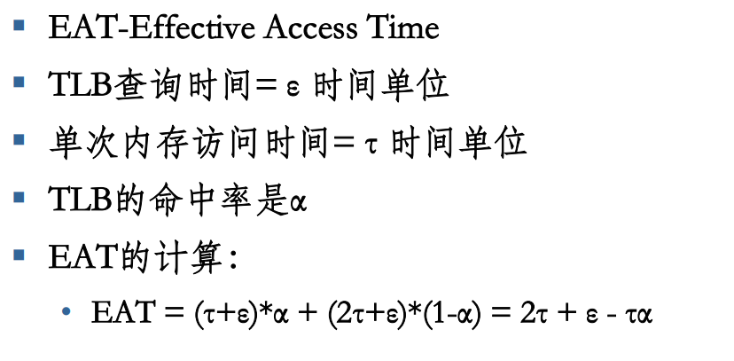
由于经济上的原因，页表一般比较短，由8-16个单元组成。
3-3.3 地址变换
地址变换机构
3-3.4哈希页表
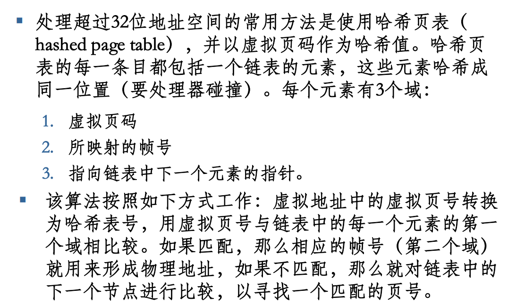
3-3.5反置页表
通常，每个进程都有与之相关的页表，这会占用大量内存。
在反置页表中，每个物理页框对应一个表项，每个表项存储该页匡对应的虚拟地址及拥有该页面进程的信息，整个系统只有一个页表
反置页表按照物理地址排序，而查找依据虚拟地址，所以可能需要查找整个表来寻找匹配
3-3.6页共享与保护
各进程把需要共享的数据/程序的相应页指向相同的物理块
页的保护
- 地址越界保护
- 在页表中设置保护位
共享带来的问题
实现数据共享的最好方法：分段存储管理
3-4 段式管理
3-4.1基本原理
1.主要动机
- 信息保护：使用信息的逻辑单位进行保护
- 动态增长：实际应用中，某些段（数据段）会不断增长
- 动态链接：在运行时才把主程序和要用到的目标程序链接起来
2.基本思想：分段地址空间
一个段：一组逻辑信息，每段都有段号，都是一段连续的地址空间，首地址为0
3-4.2地址变换
段表（记录段与内存位置的对应关系，存储在内存中）、段表寄存器（给出段表基址和长度）
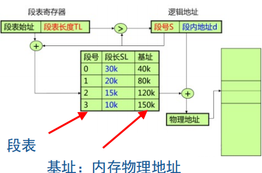
3-4.3段共享
可重入代码
又称为纯代码，指在多次并发调用时能够安全运行的代码。要求：不能使用全局/静态变量，代码不能修改代码本身，不能调用其他的不可重入代码
3-4.4与页式管理优缺点对比
分段的作业地址空间是二维的，原因：段内是连续的，段外有偏移量
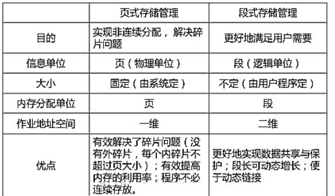
3-4.5段页式管理
用分段方法来分配和管理虚拟存储器，而用分页的方法来分配和管理实存储器。
实现原理：先把用户程序分成若干个段，并为每段赋予段名，再在段内分页管理
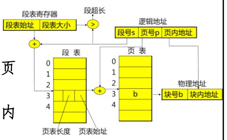
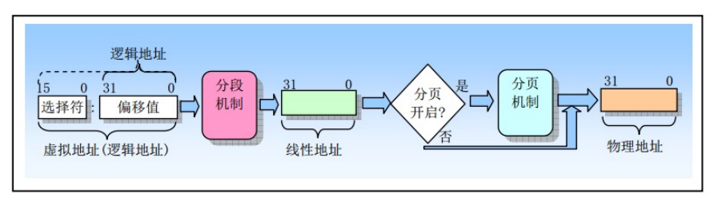
X86的地址映射分为两个部分：1.段映射机制，讲逻辑地址映射到线性地址 2.页映射机制，将线性地址映射到物理地址
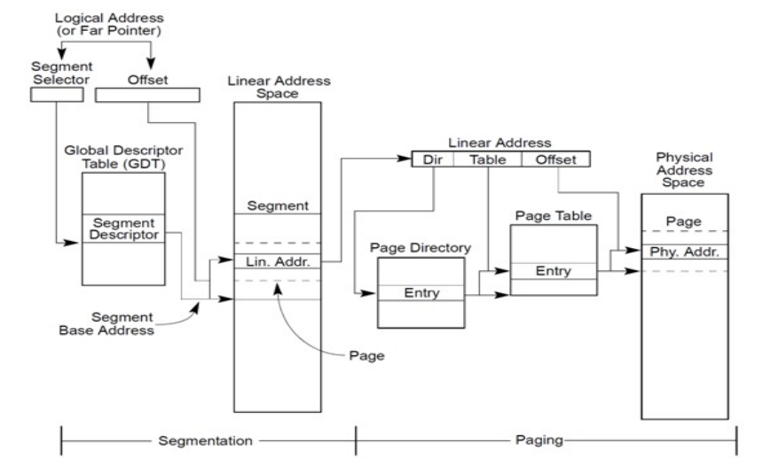
GDT：全局描述符表、LDT：局部描述符表
与二级页表对比
3-5虚拟内存管理
3-5.1局部性原理
1.虚拟存储技术的特征：离散型、多次性、对换性、虚拟性
2.优点：
代价：以时间换空间，牺牲CPU处理时间
限制：虚存的最大容量由计算机地址结构决定，32位最大容量为4GB
3.与cache-主存机制的不同：
- 侧重点不同
- 数据通路不同
- 透明性不同
- 未命中时的损失不同
实存管理与虚存管理：
实存管理：
- 分区：固定分区、可变分区
- 分页
- 分段
- 段页式
虚存管理：
- 请求分页（主流）
- 请求分段
- 请求段页式
虚拟机制要解决的关键问题：
3-5.2请求式分页
1.进程的逻辑地址空间（虚拟地址空间）
进程空间：
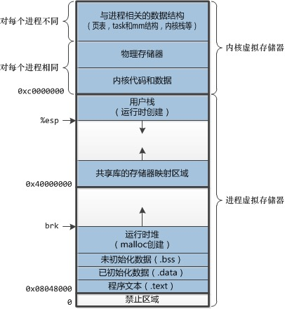
2.虚拟地址空间和虚拟存储空间
大小相同，从0开始编址
3.交换分区（交换文件）
4.地址映射问题
进程空间到虚存空间的映射
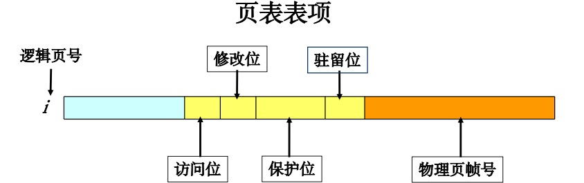
5.页面调入策略
预调页：在发生缺页时，一次调入该页以及相邻的几个页，实际应用过程中，可以为每个进程维护一个当前工作集合（简称工作集）中的页的列表
按需调页：仅当需要时才调入页面
6.缺页错误处理机制
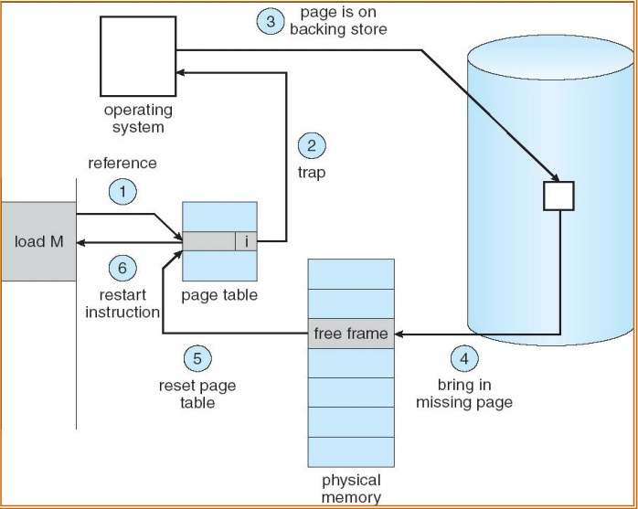
- 脑补TLB处理过程
- 关注
restart instruction：程序重新执行引发缺页中断的指令，进行存储访问。
3-5.3页面置换
1.置换策略：
最优置换（Opt）：移出永远不再需要的页面，若不存在，则应选择最长时间不需访问的页面
先进先出（FIFO）：总选择作业中在主存驻留时间最长的一页淘汰
可能出现Belady异常现象：随着分配页框（最大容量）的增多，缺页率反而提高。
改进算法：Second Chance给每一个页面增加一个访问标志位，用于标志该数据装入内存后是否被再次访问过。
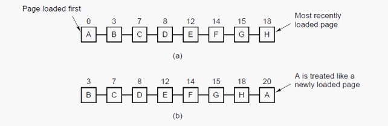
A是FIFO队列中最旧的页面，且其放入队列后没有被再次访问，则A被立刻淘汰；否则，如果放入队列后被访问过，则将A移到FIFO队列尾部，并且将访问标志位清除。如果所有页面都被访问过，则经过一次循环后就按FIFO原则淘汰。
Clock算法:
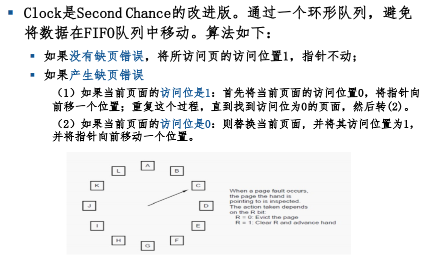
最近最少使用（LRU）：选择在最近一段时间内最久不用的页面予以淘汰
- 是局部性原理的合理近似，实现方法有：
- 软件实现方法：链表法
- 硬件实现方法：计数器
- 是局部性原理的合理近似，实现方法有：
工作集算法：动态记录进程的工作集，当需要进行页面替换时，选择不在工作集中的页面进行替换
工作集：进程运行正在使用的页面集合
3-5.4关键设计问题
工作集和驻留集管理
驻留集：虚拟存储系统中，每个进程驻留在内存的页面集合，或进程分到的物理页框集合
引入工作集的目的是依据进程在过去一段时间内访问的页面来调整驻留集的大小
驻留集管理
系统应当为每个活动进程分配多少个页框
页面分配策略
- 固定分配策略
- 可变分配策略
页面置换策略
- 局部置换策略：系统在进程自身的驻留集中判断当前是否存在空闲页框，并在其中进行置换。
- 全局置换策略：在整个内存空间中判断有无空闲页框，并允许从其他进程的驻留集中选择一个页面换出内存。
抖动问题
随着驻留内存的进程数目增加，即进程并发程度提高，处理器利用率先上升，后下降。（每个进程的驻留集不断减小，当驻留集小于工作集后，缺页率急剧上升）
抖动的消除与预防：
- 局部置换策略：是抖动集中在一个小范围内
- 引入工作集算法
- 预留部分页面
- 挂起若干进程
负载控制
主要解决应当保持多少个活动进程驻留在内存的问题。 50%准则
页面清除策略
页面缓冲算法
写时复制技术
3-6内存管理-页目录自映射
页表的作用是将虚拟地址空间映射到物理地址空间
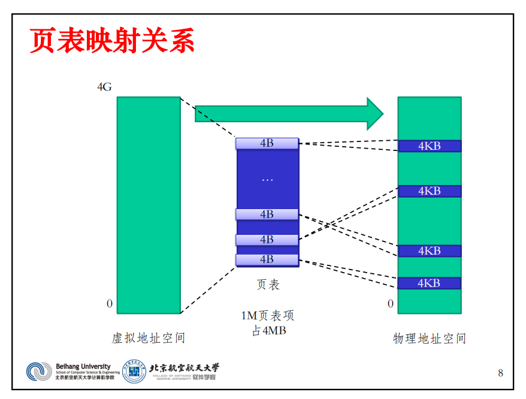
32位地址：可寻址空间为4GB
采用12位页内偏移，表明内存页的大小为4KB
每个页表项（4B）负责记录1页（4KB）的地址映射关系
整个4GB的地址空间被划分为1M页，故需要1M个页表项来记录
故有：4MB页表项（PTE），4KB页目录项（PDE）
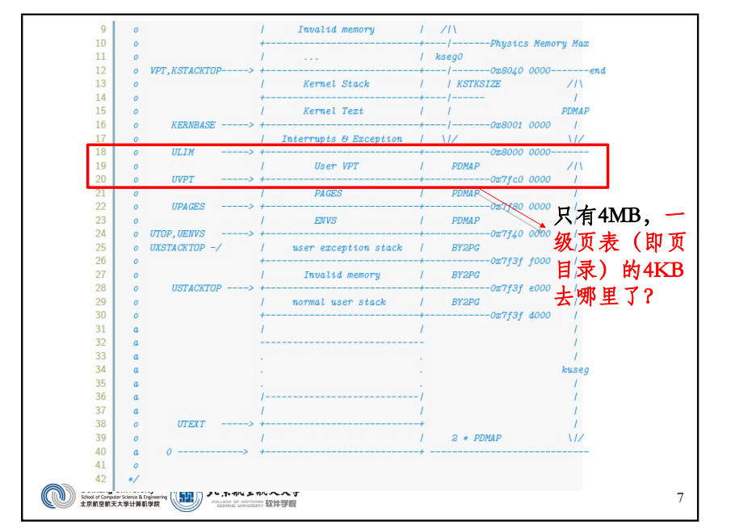
整个页表在虚拟空间的映射区间为User VPT
其中一级页表（PDE，又名页目录），只有4KB，二级页表（PTE），有4MB
4MB的页表项会被分配到1024个页面存储，称之为页表页，物理上可以分散，但逻辑上连续，其对应的映射关系记录在页目录（PDE）中。
页目录占1页的空间，有1024个页表项，每一项指向一个页表页。
每个4KB页表页会对应4MB连续的虚拟地址空间，页目录页也一样。
故： 页目录和上述的页表页内容相同，本质上也存储在4MB的空间中。
页目录基址（本质上就是页目录的第一条页表项，映射的地址是整个页表4MB空间的第一个页表页）：
可以利用页表4MB空间的起始位置（PTbase）来确定第一个页表页是整个空间中第几个页，进而确定页目录第一条页表项是第几个页表项，从而确定页目录基址（PDbase）。
PDbase = PTbase + PTbase >> 12 << 2
自映射页目录表项的地址？
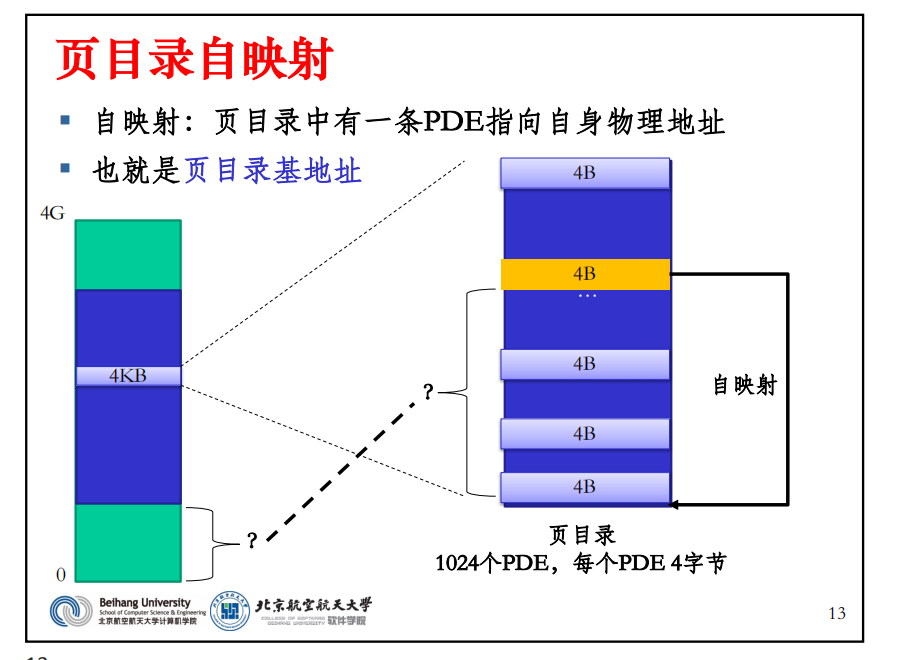
页目录是第几个页表页？进而确定自映射页目录表项
PDbase + ((PDbase - PTbase) >> 12) << 2
= PDbase + PTbase >> 20
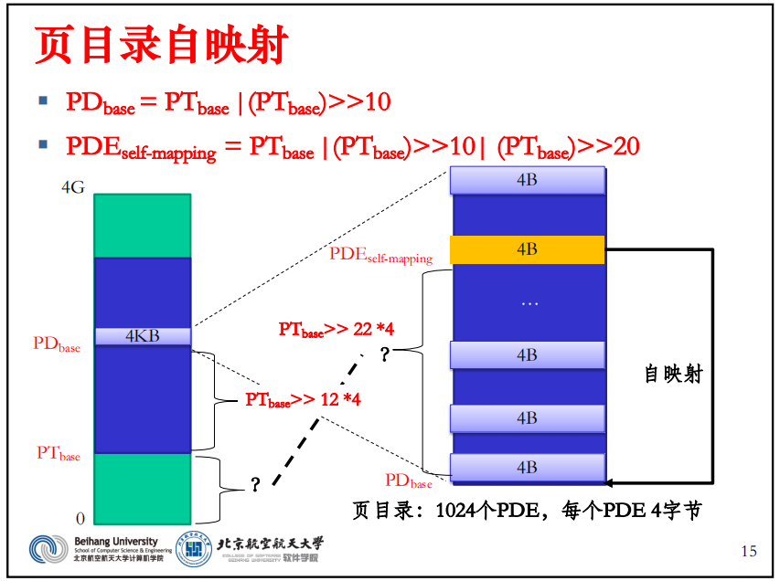
支持”页目录自映射“可节省4K（虚拟地址）空间
自映射：页目录中有一条PDE指向自身物理地址，也就是页目录基地址
例：
- 由页表虚拟基址（PTbase）， 求页目录虚拟基址（PDbase），并求 记录 逻辑-物理映射关系的页表项地址（偏移量一致）
- 由页目录虚拟基址，求页表虚拟基址。
自映射是Windows操作系统对内存管理的一种实现机制。
4.1进程与线程
并发Concurrent：
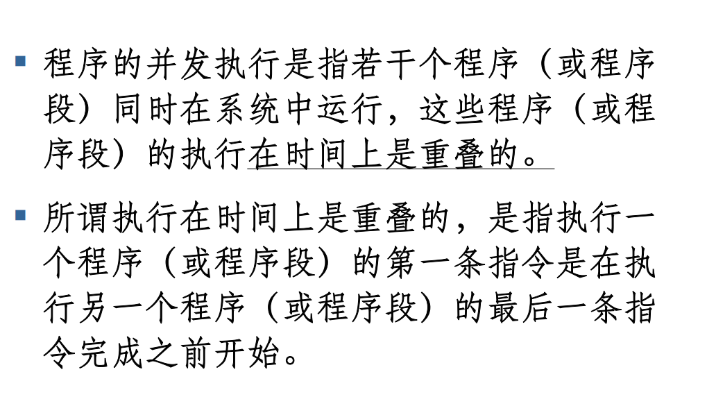
并行：Parallel
两个程序在同一时间度量下同时运行在不同的处理机上，则称这两个程序是并行执行的
4.1.1进程概念
程序并发执行时的特征：
间断性：执行——暂停——执行
非封闭性：多个程序共享系统中的资源，程序之间相互影响。
不可再现性：所有输入相同的情况下，程序的执行结果还依赖于执行的次序。
什么情况下两个进程不会发生竞争？
- 并发进程的无关性是进程与时间无关的一个充分条件，这一条件称为Bernstein条件
两个进程S1和S2可并发，当且仅当： $R(S1) \cap W(S2) = \emptyset$
$W(S1) \cap R(S2) = \emptyset$ 、$W(S1) \cap W(s2) = \emptyset$
Bernstein条件是判断程序并发执行结果是否可再现的充分条件。
- 进程的引入（Process）
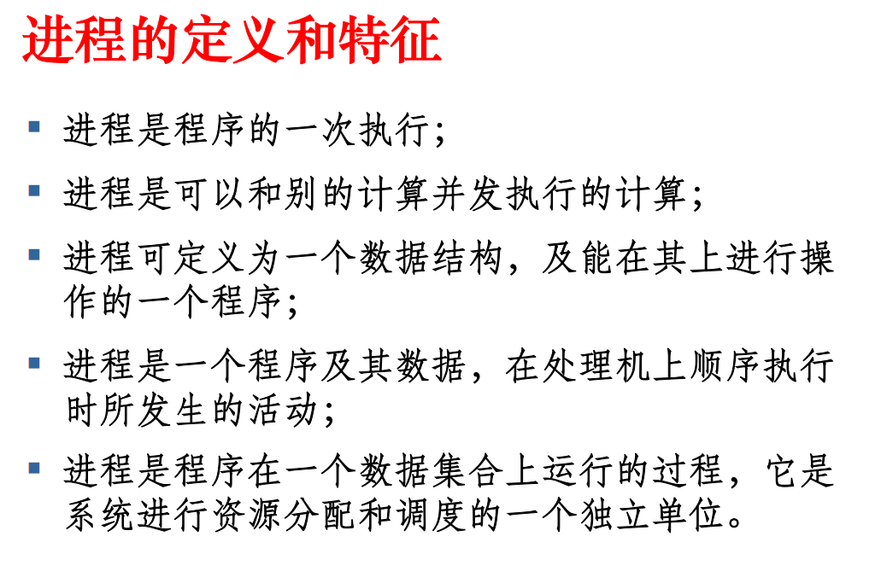
- 进程的特征：
- 动态性
- 并发性
- 独立性
- 异步性
- 结构特征：程序段、数据段、进程控制块PCB
4.1.2进程的状态与控制
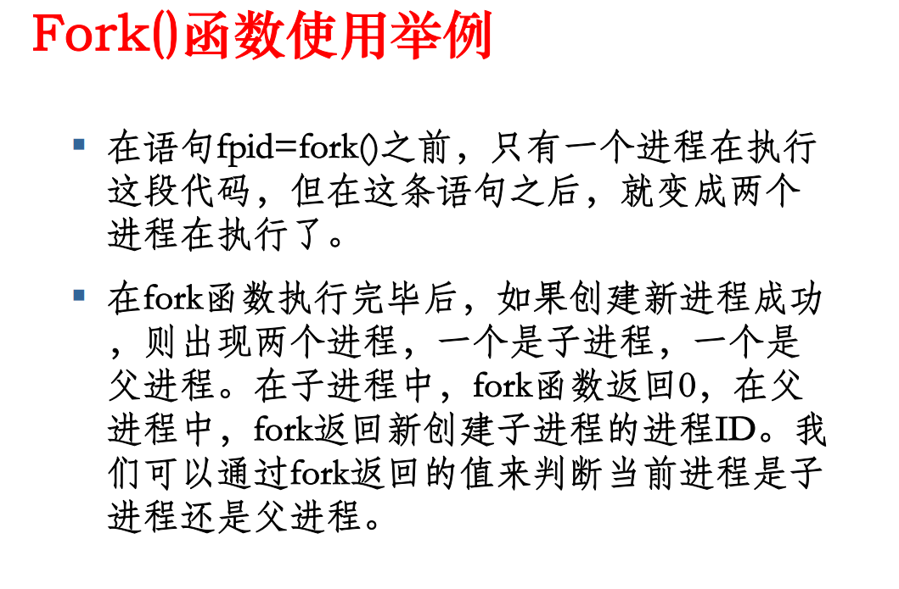
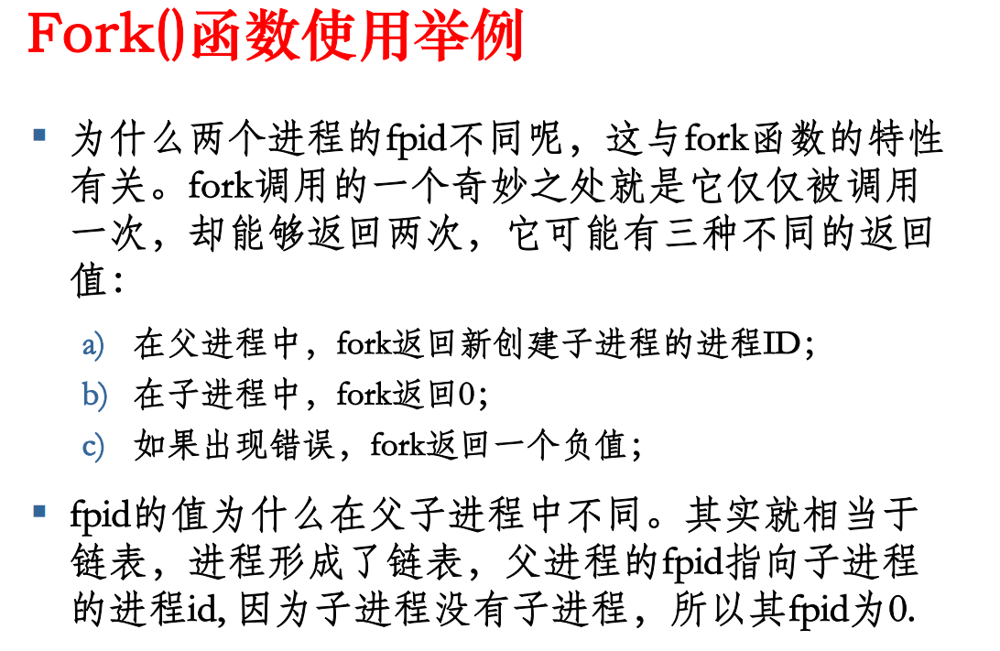
- 原语：由若干条指令所组成的指令序列，来实现某个特定的操作功能
- 指令序列执行是连续的，不可分割
- 是操作系统的核心组成部分
- 必须在内核态下执行，且常驻内存
- 进程的三种基本状态
- 就绪状态，只等待CPU资源
- 执行状态，
- 阻塞状态
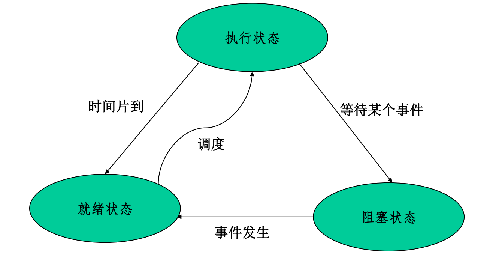
注意到就绪状态不会直接进入阻塞状态，阻塞状态不会直接进入执行状态
- 进程控制块
系统为每个进程定义了一个数据结构，进程控制块 PCB
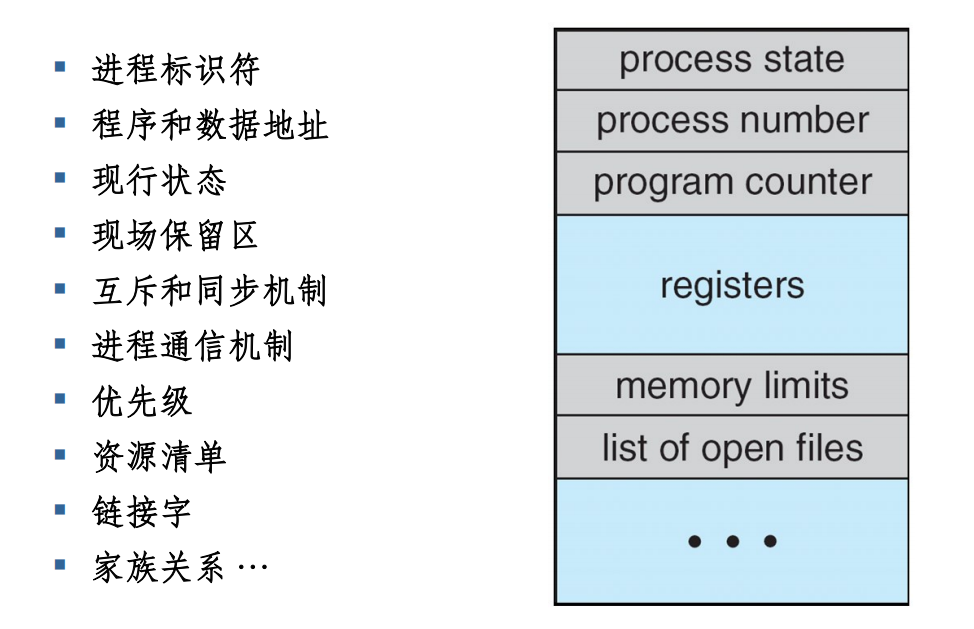
进程控制块的主要内容：
- 进程标识符：每个进程的唯一标识符
- 程序和数据地址：把PCB和其程序和数据联系起来
- 现行状态：相同状态的进程会放入一个队列
- 现场保护区
- 同步与同步机制：用于实现进程间互斥、同步和通信所需的信号量等。
- 优先级：进程的急迫程度
- 资源清单：列出所拥有的除CPU之外的资源记录，如拥有的I/O设备、打开的文件列表
- 链接字：PCB链接字指出该进程所在队列中下一个进程PCB的首地址
- 其他信息：如进程记账信息
PCB的组织方式：
- 线性表：不论进程状态如何，将所有PCB连续的存放在内存的系统区
- 链接方式：按进程的状态组成队列
- 索引方式：按照进程的状态不同，分别建立索引表
辨析：进程上下文切换 vs 陷入内核
进程上下文切换：1.通常由调度器执行 2.保存进程执行断点 3.切换内存映射（flush TLB）
陷入内核：1.CPU状态改变 2.由中断、异常、Trap指令引起 3.需要保存执行现场（寄存器、堆栈）。
陷入内核主要是寄存器上下文的切换，和进程上下文切换不同
4.1.3 线程概念的引入
进程包含了两个概念：资源拥有者和可执行单元
现代操作系统将资源拥有者称为进程，可执行单元称为线程
线程：将资源与计算分离，提高并发效率
引入线程的目的：减小进程切换的开销、提高进程内的并发程度、实现线程间共享资源
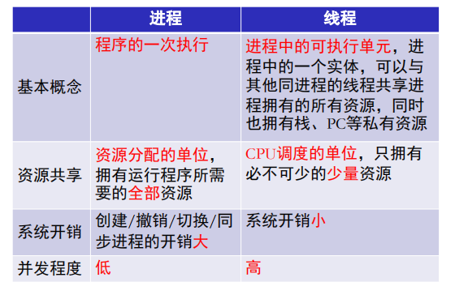
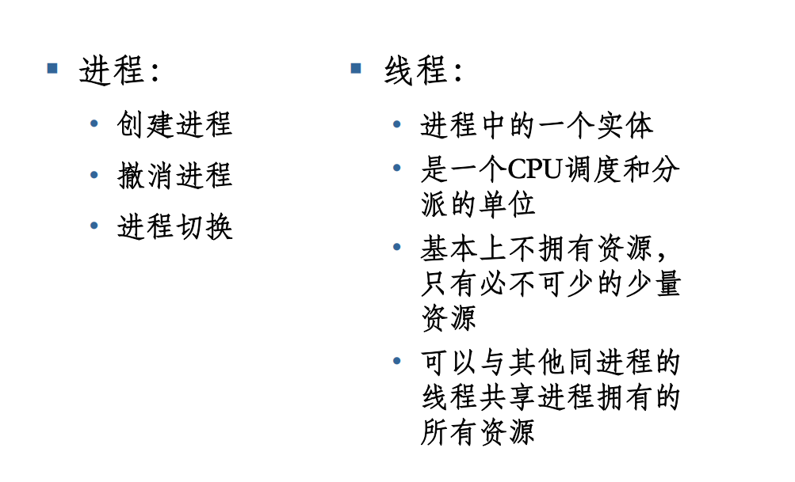
4.1.4线程的实现方式
用户级线程
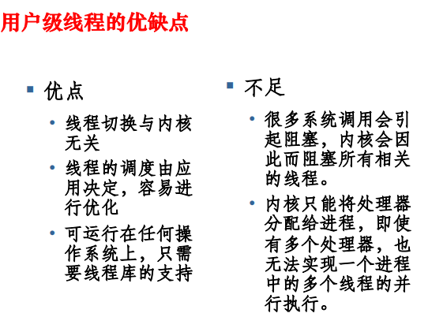
内核级线程
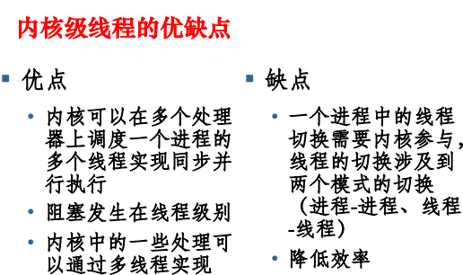
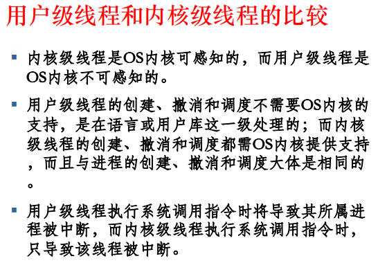
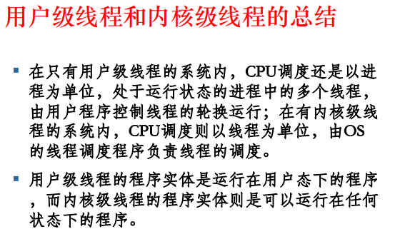
4.2进程管理——同步与互斥
临界资源：一次仅允许一个进程访问的资源
临界区：每个进程中访问临界资源的那段代码 critical region
4.2.1进程的同步与互斥
进程的三个特征：并发、共享、不确定性
- 进程互斥:（间接制约关系）是程序不希望的
- 进程同步:系统中各进程之间能有效地共享资源和相互合作，从而使程序的执行具有可再现性的过程称为进程同步。（直接制约关系）join操作，例如大数据关键词搜索
互斥：无法限制访问者对资源的访问顺序，即访问时无序访问
同步：是指在互斥的基础上，通过其他机制实现访问者对资源的有序访问。
临界区管理应满足的条件，机制设计上应遵循的准则：
- 空闲让进
- 忙则等待
- 有限等待
- 让权等待
4.2.2基于忙等待的互斥方法
- 软件方法：
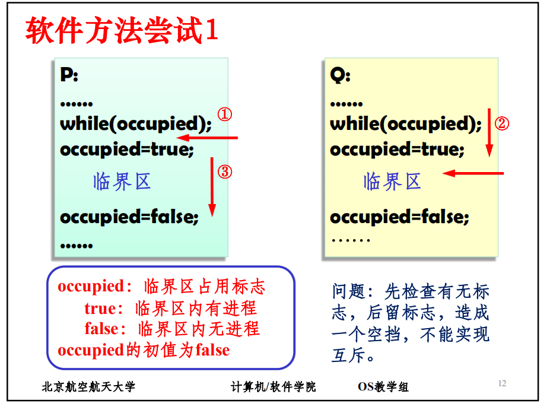
出现空挡的原因：多线程调度（进程切换context switch）发生在关门的那一刻。（root cause）——两个线程都进入临界区
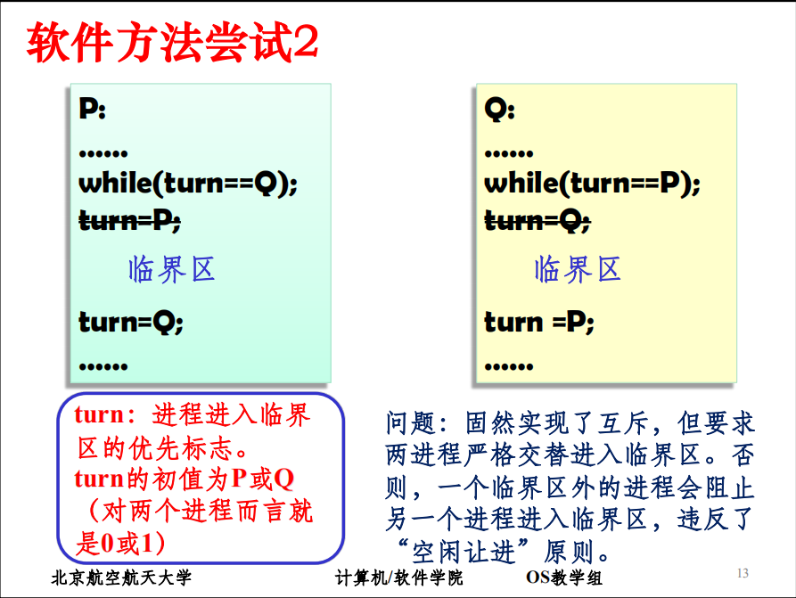
违反了空闲让进的原则。
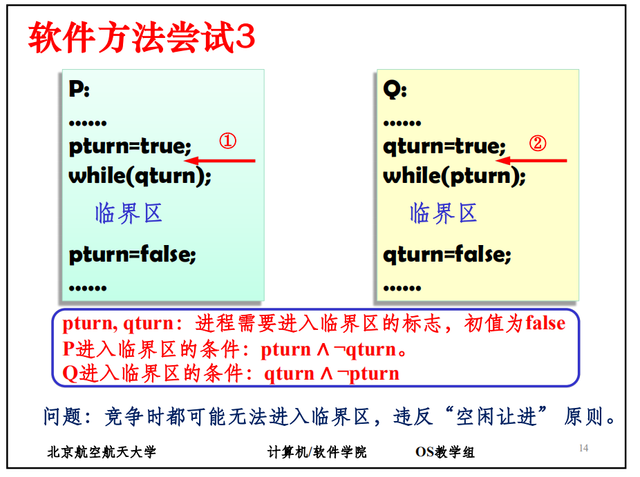
当两个进程都想要访问临界区（竞争）时，此时pturn合qturn同时为true.——两个线程都无法进入
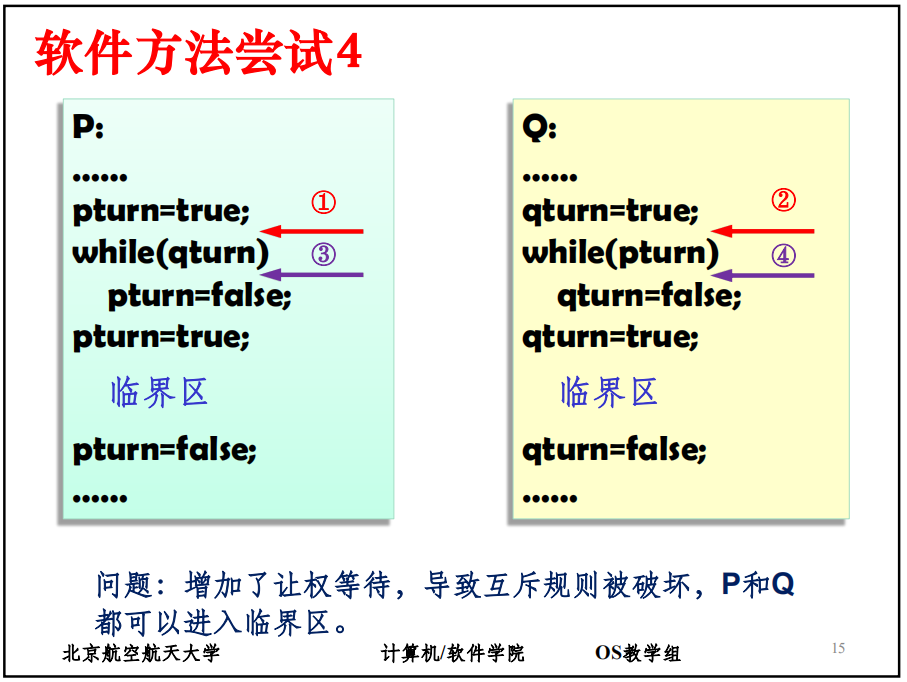
同样会产生同时进入临界区的问题
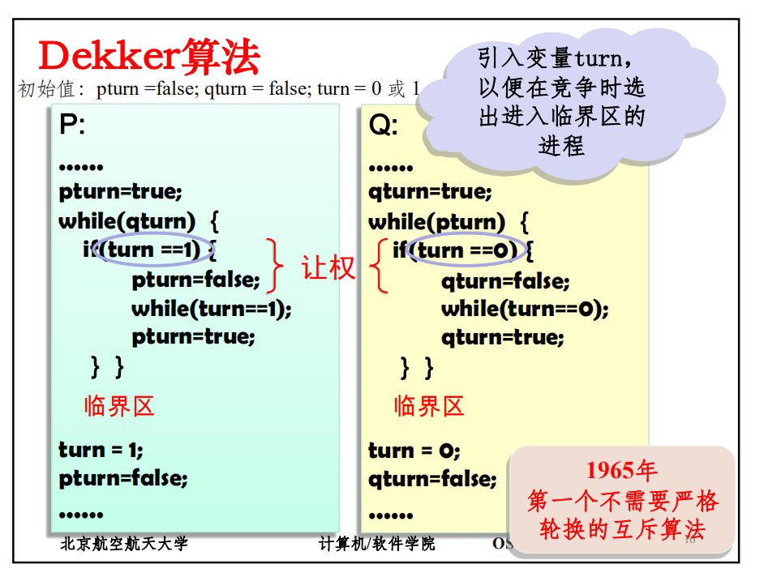
turn==1时，p会等待；turn == 0时，q会等待
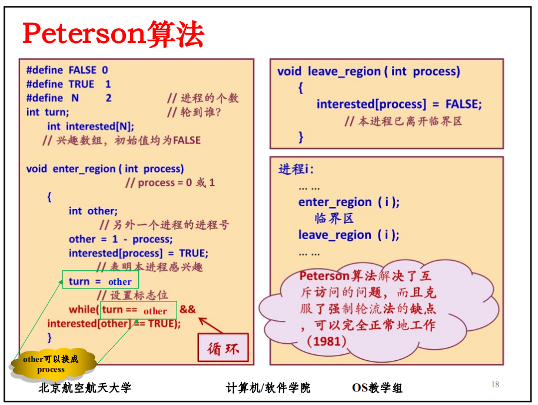
两算法的通俗解释：
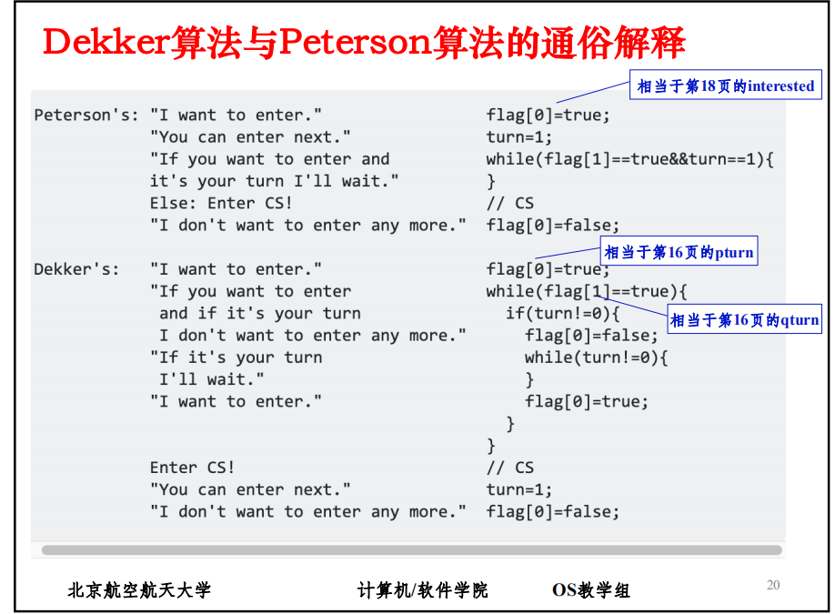
- 硬件方法：
方案1：中断屏蔽
方案2：使用test and set指令
- 问题：忙等待、优先级反转
优先级反转：低优先级先进入了临界区，此时来了高优先级进程，低优先级尝试让出临界区，但若高优先级采用忙等待策略，则会让权给低优先级，导致高优先级和低优先级都无法正常进行。
4.2.3基于信号量的同步方法
- 同步实现的基本思路：同步中，进程经常需要等待某个条件的发生，如果使用忙等，势必浪费大量的CPU时间。
补充：生产者——消费者模型（消费者从对共享资源仍然是写操作）
- 信号量（semaphore）：由dijistra提出
PV操作：P操作也称为semWait，V操作叫做semSignal
- 信号量的定义：
一个确定的二元组（s,q），其中s是一个具有非负初值的整型变量，q是一个初始状态为空的队列。
s为正，表示可立即执行的进程的数量；s<=0，其绝对值表示被阻塞的进程数
当进程被阻塞时会被插入到q队列中
信号量的分类
- 二元信号量和一般信号量
二元信号量：取值为0或1，主要用于互斥。一般信号量：初值为可用物理资源的总数，用于进程间的协同问题。
- 强信号量和弱信号量
强信号量：进程从被阻塞队列释放时采取FIFO。
弱信号量：没有规定进程从阻塞队列中移除序列。
二元信号量机制
该操作通常实现两个进程的互斥。
- 一般信号量的结构
一般信号量的数据结构包含：一个初始值为正的正整数：s.count，一个初始为空的队列：s.queue.
- 信号量的操作
能够检查和操作信号量的操作只有三个：初始化（可能为非负整数）、P操作、V操作
- 信号量机制的实现
- 软件实现方式
- 硬件实现方式
信号量在并发中的典型应用
互斥：初始值为1，进入临界区之前执行P操作，进入临界区之后执行V操作
有限并发：指有n（1-c）个进程并发执行一个函数或一个资源，一个初始值为c的信号量可以实现这种并发
进程同步：指一个进程Pi想要执行ai操作之前，必须等待Pj进程执行完aj操作，可以如此实现：将信号量初始化为0，Pi执行ai操作之前执行一个P操作，Pj执行一个aj操作之后执行一个V操作。
答：可以，但会造成两个进程存在同时阻塞的情况，影响性能；不可以，两个进程一定会同时阻塞
补充：Map-Reduce
- 多进程同步原语：屏障
- 进程同步/互斥类问题的解答：
cobegin —— coend
信号量级机制
- AND型信号量集
将进程需要的所有共享资源一次全部分配给他，待该进程使用完成之后再一起释放。
- 一般信号量集：SP(S, d, e)应当表示每次申请e个资源，但当资源数少于d个时便不予分配
PV操作的优缺点：可能出现死锁问题
4.2.4基于管程(Monitor)的同步方法
管程的定义与组成
一种同步机制，由共享资源的数据及其在该数据上的一组操作组成，该同步机制称为管程。
管程要解决的问题
条件变量与信号量的区别
多个进程同时在管程中出现
管程是程序设计语言中引入的一种高级同步机制，条件变量：wait/signal
Hoare管程
- 入口等待队列：管程每次只允许一个进程进入其内，所有一个进程试图进入一个已经被占用的管程时他应该在管程的入口处等待。
- 紧急等待队列：在管程内部由于执行唤醒等操作，可能会出现多个等待进程。
- 同步操作原语wait和signal：
- 信号量定义1：mutex（初值为1）、next（初值为0）、x_sem
- 管程的实现：
4.2.5进程通信（Inter-Process-Comm）的主要方法
1.通信分类：
低级通信（信号量和管程）、高级通信（管道、共享内存、消息系统）：
2.IPC分类
- 管道及命名管道
- 无名管道：半双工的、独立的文件系统并且只存在于内存中
- 有名管道：又称FIFO，不相关的进程也能交换数据。
管道会先把缓冲区填满，然后读进程才能读，当缓冲区还有数据时，写进程不会往缓冲区写数据
- 消息传递：两个通信原语（OS系统调用）
- 共享内存：最有用的进程间通信方式，也是最快的IPC形式（避免了其他形式的IPC必须执行的开销巨大的缓冲复制）``
- 信号量
- 套接字
- 信号
4.2.6经典的进程同步和互斥问题
- 生产者消费者
交换顺序后会让消费者在P(mutex)上多忙等待，有一定影响。
- 读者-写者问题
对共享资源的读写操作，任意时刻“写者”最多只允许一个，而读者则允许多个。
- 哲学家进餐问题
- Turnstile——闸机：
问题：属于读者优先还是写者优先
4.3进程管理——调度
4.3.1基本概念
1.要解决的问题：进程调度算法、进程调度的时机、CPU切换过程（进程上下文切换）
2.调度的类型：高级调度（作业调度）、中级调度（内外存交换）、低级调度（微观调度，分为抢占式和非抢占式）
3.调度性能准则：
- 面向用户的调度性能准则：周转时间、响应时间、截止时间、优先级、公平性
- 面向系统的：吞吐量、处理机利用率、各种资源的均衡利用
- 面向调度算法本身：易于实现、执行开销比小
4.3.2设计调度算法要考虑的问题
要点：
- 进程优先级（数）：优先级和优先数不同，优先级表现了进程的重要性和紧迫性，优先数实际上是一个数值，反映了某个优先级。（优先级静态和动态）
- 进程就绪队列组织：按优先级排队，所有进程初始在第一级就绪后动态降级。
- 占用CPU的方式：不可抢占式（一旦处理器分配给某个进程，该进程一直占用，直到主动让出）、抢占式（高优先级抢占低优先级）
- 进程的分类：I/O密集型（中断多）、CPU密集型（计算量大） || 批处理进程（无需交互）、交互式进程（word）、实时进程（视频）
- 时间片
4.3.3批处理系统的调度算法
- 吞吐量：作业数/总执行时间，单位时间CPU完成的作业数量
- 周转时间：完成时刻 - 提交时刻
- 带权周转时间：周转时间/服务时间（执行时间）
- 平均周转时间：作业周转时间之和/作业数
- 平均带权周转时间：作业带权周转时间之和/作业数
批处理系统中常用的调度算法
- 先来先服务（FCFS）
- 最短作业优先（SJF）：（非抢占式）
- 最短剩余时间优先（SRTN）：将短作业优先进行改进，改进为抢占式，若一个新就绪的进程比当前运行进程具有更短的完成时间，系统抢占当前进程。
- 最高响应比优先（HRRF）：在每次选择作业投入运行时，先计算后备作业队列中每个作业的响应比RP，选最大的。
（RP = （作业已等待时间 + 作业请求服务时间）/ 作业请求服务时间）
非抢占式
4.3.4交互式系统的调度算法
- 时间片轮转（RR）：过长：退化为FCFS算法，过短：上下文切换时间长
- 优先级算法：静态优先级、动态优先级
- 多级队列（MQ）：不同队列有不同的优先级、时间片长度、调度策略等
- 多级反馈队列
优先级倒置：高优先级进程被低优先级进程阻塞
解决方法：优先级置顶、优先级继承
4.3.5实时系统的调度算法
实时调度的问题描述
- 静态表调度（事先确定一个固定的调度方案）
- 单调速率调度（单处理器下静态最优调度算法）：将系统的利用系数和系统的可调度性联系起来，推导出用RM调度所能达到的最小系统利用率公式。
- 最早截止时间优先算法（EDF）
- 最低松弛度优先算法（LLF）：根据任务的紧急度确定优先级，松弛度 = 任务截止时间 - 当前时间 - 本身剩余运行时间
4.3.6多处理机调度
- 非对称式多处理系统（AMP）：主从处理机
对称式多处理系统（SMP）：所有处理器的地位相同
集中控制
- 静态分配：每个CPU设立一个就绪队列
- 动态分配：各个CPU共用一个公共就绪队列，队首进程每次分配到当前空闲的CPU上执行
分散控制
- 自调度：所有CPU采用一个公共就绪队列，每个处理机从队列中选择合适的进程执行（自行选择）
成组调度：将一个进程中的一组线程绑定在一起，分派到一组处理机上进行：
专用处理机调度：
为进程中的每个线程固定分配一个CPU，直到该线程执行完成
4.4进程管理——死锁
4.4.1死锁的概念
定义：一组进程中，每个进程都无限等待组内其他进程所占有的资源，在无外力介入的条件下，将因永远分配不到资源而无法运行的现象
- 浪费大量系统资源、甚至导致系统崩溃
死锁发生的原因：资源竞争、并发执行的顺序不当。
死锁发生的四个必要条件：
- 互斥条件
- 请求和保持条件
- 不可剥夺条件
- 环路等待条件
活锁和饥饿
- 活锁：任务或者执行者没有被阻塞，由于某些条件不满足，导致一直重复尝试
- 饥饿：进程由于资源分配的不公平导致长时间等待，有可能会导致进程饿死
4.4.2处理死锁的基本方法
- 不允许死锁发生
- 预防死锁（静态）：
- 打破互斥条件（有些资源不行）
- 打破请求且保持条件：实行资源预分配策略（缺点：不可预测、资源利用率低、降低进程的并发性）
- 打破不可剥夺条件：允许进程强行从占有者那里夺取资源（实现困难，会降低系统性能）
- 打破循环等待条件：使占有资源不会形成环路（增加了系统开销、增加了进程对资源的占用时间）
- 避免死锁（动态）：在资源分配前进行判断，找一条安全路径
- 预防死锁（静态）：
- 允许死锁发生
- 检测与解除死锁
- 无所作为：鸵鸟算法
避免死锁
银行家算法：
不安全状态：在不安全状态，只要进程不请求资源就可以一直执行下去，不死锁。如果请求了资源，例如xxx申请了x资源，xxx申请了x资源，则系统处于死锁状态。
检测死锁
资源分配图（RAG算法）
- 封锁进程：是指某个进程由于请求超过了系统中现有的未分配资源数目的资源，而被系统封锁的进程
- 资源分配图化简方法：假设P点非封锁，则将其请求边变为分配边，一旦P的所有请求全部满足，则孤立P点
死锁定理：
解题：
1.画出资源分配图
2.根据资源分配图进行化简
死锁解除
- 资源剥夺法
- 撤销进程法
哲学家就餐问题：
4.4.3小结
5.设备管理
5.1 I/O管理概述
总线（Bus）：接入I/O设备的主要方式
I/O身背的分类：块设备、字符设备
5.2 I/O硬件的组成
设备控制器：操纵I/O设备，使设备完成I/O传输
I/O端口地址
接口电路中每个寄存器具有唯一的地址，所有的I/O端口地址形成I/O端口的地址空间，I/O指令形式与I/O地址是相互关联的，主要有以下形式：
- 内存映像编址
- I/O独立编址
5.3 I/O控制方式
外设和内存之间的输入输出。
- 程序控制：以字为单位，”我看着你吃完“
- 中断驱动：以字为单位，“你吃完叫我”
- 直接内存访问：DMA：以数据块为单位，在外设和内存之间交互，仅在传送数据块的开始或结束时才需要CPU的干预
- 通道技术：Channel
通道是一个独立于CPU的专管I/O控制的处理机，他控制设备与内存直接进行数据交换，根据信息交换方式，可将通道分为三种类型：
- 字节多路通道：按字节交叉工作，以字节为单位，主要用于低速设备，如打印机。
- 数据选择通道：以块为单位，主要连接高速设备，如磁盘机和磁带机。注：数据选择通道一次只能执行一个通道指令程序，所以选择通道一次只能控制一台设备进行I/O操作。
- 数组多路通道：传送效率高，能分时操作不同的设备。主要连接中速块设备。
5.4 I/O软件的组成
设备独立性：逻辑设备和物理设备
设备驱动程序
5.5 I/O缓冲管理
- 单缓冲
- 双缓冲：要求CPU的处理速度和外设速度相近。
- 环形缓冲
- 缓冲池
5.6 I/O设备管理
设备控制表（DCT）、控制器控制表（COCT）、通道控制表（CHCT）、系统设备表（SDT）
SPOOLing技术：
5.7 I/O性能问题
- 阻塞I/O
- I/O多路复用
- 非阻塞I/O
- 事件驱动I/O
- 异步I/O
6.磁盘管理
6.1磁盘的历史及工作原理
基本概念：
- 扇区（sector）：盘片被分成许多扇形的区域
- 磁道（track）：盘片上以盘片中心为圆心，不同半径的同心圆
- 柱面（cylinder）：不同盘片相同半径的磁道所组成的圆柱
- 每个磁盘有两个面，每个面有一个磁头head
- 距离轴心最远的柱面/磁道编号为0
- 外道访问速度最快
磁盘的组织：
- 都一个扇区需要“柱面/磁头/扇区”三个参数
- 逻辑块是最小的传输单位
- 扇区编号映射是：先按磁道内扇区顺序，再按柱面内磁道顺序，再从外到内的柱面顺序排序。
Flash Disk：
低功耗、大容量、数据访问速度高。
6.2磁盘的组织与调度
磁盘空间管理
- 位图
- 空闲表法
- 空闲链表法：所有空闲块一个链表
- 成组链接法：把空白物理块分成组，再通过指针把组与组之间连起来
磁盘访问时间：寻道时间+旋转延迟时间+传输时间
- 寻道时间：磁臂从当前位置移动到指定磁道上所经历的时间，是磁盘启动时间s + 移动n条磁道花费的时间之和
- 旋转延迟时间：3600r/min -> 60r/s -> 每转16.7ms ->平均旋转延迟：1/(2*r)
- 传输时间：指把数据从磁盘读出或写入磁盘的所经历的时间
传输时间所占比例较小
磁盘调度算法：
- 先来先服务
- 最短寻道时间：优先选择距离当前磁头最近的访问请求进行服务
- 扫描算法
- SCAN/CSCAN（循环扫描算法）
- LOOK/CLOOK
6.3提高I/O速度的主要途径
- 选择性能好的磁盘
- 并行化
- 采用适当的调度算法
- 设置磁盘高速缓冲区
- 提前读
- 延迟写
- 虚拟盘
6.4廉价冗余磁盘阵列
- RAID 0：条带化存储，提高了磁盘的I/O速度，但无冗余校验功能。 理论上，有N个磁盘组成的RAID0是单个磁盘读写速度的N倍
- RAID 1：镜像存储。实现数据冗余
- RAID 2：海明码校验 + 条带存储
- RAID 3：采用奇偶校验+数据位交叉 （字节级别）
- RAID 4：采用奇偶校验+数据块交叉（扇区级别）
- RAID 5：采用数据块交叉+分布冗余校验
- RAID 6：双维校验独立存取盘阵列+数据块交叉
7.文件系统
7.1文件系统的基本概念
数据存储的现实需求：内存空间有限、随着进程结束丢失（易失）、多个进程无法共享
需要磁盘等外部设备来长期地保存大量的数据，并且方便地让数据装载到不同进程的内存空间进行共享。
文件的引入
磁盘存储数据的问题：1.磁盘上的寻址 2.磁盘数据的保护 3.磁盘空闲空间的管理
将“文件”作为数据存储和访问的单位，可看作是对用户数据的逻辑抽象。
对用户而言：屏蔽访问外存上数据的复杂性；
对磁盘等资源：提高资源利用率、优化性能。
文件管理的需求
用户视角：使用逻辑文件
操作系统视角：组织和管理物理文件
文件系统
文件系统是操作系统中统一管理信息资源的一种软件，管理文件的存储、检索、更新，提供安全可靠的共享和保护手段，并且方便用户使用。
文件系统的任务：
- 统一管理磁盘空间，实现磁盘空间的分配与回收
- 实现文件按名存取：名字空间 —-映射—>磁盘空间
- 实现文件信息共享
- 向用户提供一个方便使用、易于维护的接口，并向用户提供有关统计信息
- 提高文件系统的性能
- 提供与IO系统的统一接口
文件系统模型的三个层次
文件系统管理的对象有：1.文件 2.目录 3.磁盘存储空间
文件类型
- 按性质和用途：系统文件、库文件、用户文件
- 按数据形式：源文件、目标文件、可执行文件
- 按对文件实施的保护级划分：只读文件、读写文件、执行文件、不保护文件
- 按逻辑结构分：有结构文件、无结构文件
- 按文件中物理结构分：顺序文件、链接文件、索引文件
在UNIX系统中，文件分为三类，即普通文件、目录文件和特殊文件
目录的提出
效率：迅速定位
命名：方便用户
分组功能
目录的分类
- 单级文件目录
- 二级文件目录
- 多级文件目录
目录的内容：
7.2文件系统的实现方法
文件实现需要解决的两个问题：
- 如何描述文件，如何记录文件的各钟管理信息
- 如何存放文件，如何为文件中的各个连续的逻辑块分配磁盘中的空闲物理块？如何来记录逻辑块和物理块之间的映射关系
文件控制块 VS 文件描述符
- 文件控制块：描述文件的基本信息
- 文件描述符：一般为一个非负整数，唯一标识一个打开的文件
文件的逻辑结构和物理结构
文件的物理结构主要有：连续结构、索引结构、串联结构
索引文件结构：
典例：
课堂练习
文件目录的查询技术
- 顺序查询法
- Hash方法：散列法或杂凑法
保护文件的方法
- 建立副本（文件备份）
- 定时转储（文件转储）
- 规定文件的权限（文件保密）
文件系统的性能问题
- 块高速缓存：置换策略、写入策略
磁盘的大小问题

7.3文件系统的实例分析
DOS
FAT
Linux
This is copyright.